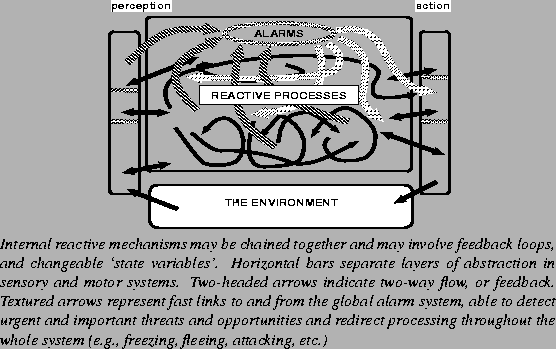
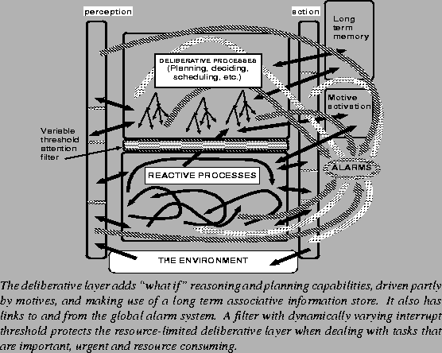
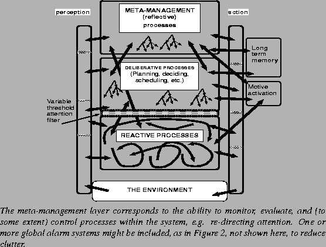

|  |
Later version of diagram:

|
Aaron Sloman and Brian Logan
1999-2003
He was replaced in June 2000 by Matthias Scheutz, then on leave from the University of Notre Dame.
Matthias returned to his post at Notre Dame University in the summer of 2001. Our collaboration continued after he returned, e.g. see http://mypage.iu.edu/~mscheutz/publications/
See his simworld system: http://www.cs.bham.ac.uk/research/projects/poplog/simworld
We then sought a further post doctoral research fellow to join the project for the remaining two years.
Ron Chrisley applied for the post, for which he was granted leave from the University of Sussex, and was appointed Research Fellow from October 2001 until June 2004.
Note added after the project:
Research papers produced within this project can be found in the
Cognition and Affect project web pages, between 2000 and about 2004Online presentations related to project are here:
http://www.cs.bham.ac.uk/research/projects/cogaff/talks/A later project continued to develop some of the themes, namely The EU-Funded CoSy robotic project
Papers and presentations from that project are available here.
This work continued after he came to the university of Birmingham in 1991. In Birmingham the work included collaboration with Professor Glyn Humphreys in the School of Psychology and various colleagues and research students in the School of Computer Science. Collaboration with Brian Logan began when he arrived as research fellow in 1995, and with Matthias Scheutz in 2000.
We explore information processing models of mind by combining philosophical conceptual analysis and philosophically inspired ``top-down'' design, along with ``bottom-up'' use of Artificial Intelligence (AI) techniques to produce software and demonstrations. We also attempt to take account of ideas and empirical results from other relevant disciplines, including brain science, psychology, theoretical biology, linguistics.
The main scientific goal is to continue the development of an explanatory framework which we believe can integrate many types of phenomena that are usually studied separately by researchers in AI, psychology, neuroscience and other disciplines, including perception, learning, decision making, problem solving, personality development, pleasure, pain, emotions, planning, plan execution, reactive behaviour, motor control, reflex actions, etc.
This framework, referred to as the ``CogAff architecture schema'', should account for a variety of types of animals, and also not just normal human adults but also infants, and humans with various kinds of brain damage. It should be testable by checking with empirical results from psychology, brain science, ethology, etc. It should be consistent with plausible constraints on evolvable biological architectures -- e.g. at every stage in the evolutionary history and in the development of the individual there should be a viable system, which is not a require for something built in a laboratory.
It should also be sufficiently precise to guide the design and implementation of working models which can test the feasibility of the design ideas and demonstrate implications of the proposed architecture.
Further details of the project can be found in the full proposal below. Work done previously and since this proposal was originally written can be found in our paper repository http://www.cs.bham.ac.uk/research/cogaff/ and in our tools and software repository http://www.cs.bham.ac.uk/research/poplog/freepoplog.html
The main project proposal submitted to Leverhulme follows.
The notion of a ``virtual machine'' (not to be confused with ``virtual reality'', which generally refers to a type of interface between machines and users) is commonly used in computer science, software engineering and AI to refer to a machine whose states, properties, and laws of behaviour are not necessarily those of any physical machine, but which can be brought into existence by suitably configuring a certain kind of physical machine (e.g.,a computer, or network of computers, or perhaps a brain, or a society of humans).
If we claim that poverty can cause crime we are referring to interactions within a socio-economic virtual machine. When we say that in a chess computer threatening mate makes the computer search for a defensive move or a counter-attack, we are referring to a chess-playing virtual machine. Its states involve chess pieces related by positions on a board, with laws of behaviour based on rules of chess, not laws of physics. The chess pieces in the machine and their positions and moves are not physical entities or processes, like transistors, wires, or voltage changes, though they are implemented in physical mechanisms.
A typical high level computer programming language will refer to a particular virtual machine containing certain types of ``abstract'' entities, e.g. various kinds of numbers, strings, arrays, lists, procedures, rules, etc. When such a program runs it will typically use a ``lower level'' general purpose virtual machine defined by computer engineers, e.g. a pentium or sparc virtual machine. That will in turn be implemented in a physical machine. In fact such a machine (e.g. pentium) may be implemented in several different physical machines. Usually each year's implementations are faster, and more compact, than the previous year's!
Although engineers currently know how to make many kinds of virtual machines which we all use increasingly in our daily life (whether we know it or not), there are many philosophical issues about such machines that need to be clarified, for instance, what kinds of causal relations can occur in a virtual machine, and how causal relations can hold between components of a virtual machine and a physical machine, without requiring any ``causal gaps'' in the physical machine. Clarifying all this is part of what this project is about.
The physical sciences (physics, chemistry, astronomy, geology) study machines which transform, manipulate, store, transmit or use matter and energy. Virtual machines, however, are mainly concerned with transforming, manipulating, storing, transmitting, or using information. In a sense every physical object is potentially an information processing machine insofar as it can be treated as a model for something else. For example, pieces of string can be used to compute the sum of two lengths.
However some machines use themselves to process information: there need be no external user who knows what is going on. In Sloman (1985) some progress was made towards clarifying some of the differences between machines which do and those which do not process information themselves. It turns out that there is neither a simple dichotomy nor a continuous ``spectrum'' of cases. Rather, there are many different clusters of features involved in the ability to manipulate and understand information, and adding or removing features produces many discontinuities in the space. A particularly simple case is the type of understanding a computer has of a bit pattern as referring to a location in its memory.
Information processing machines are fundamental to living things and have therefore been in existence for millions of years. Philosophers have been studying information processing mechanisms for at least a couple of millenia insofar as they have studied the nature of perception, reasoning, decision making, etc. However, until recently, a study of information processing machines was not recognised as a proper task for science. Control engineering, computer science and AI have changed that, and brain science, psychology and biology have followed suit, leading to a rapid explosion of new ideas. But many of the features of information processing machines are not yet understood.
Some virtual machines, have properties which most people find counter-intuitive. For instance, part-whole relationships are different from those in physical machines. In a software virtual machine with list-processing mechanisms, if A and B are lists, then A may be a list whose third element is B while B is a list whose first element is A. Such mutual containment is impossible for physical components.
Facts like this rule out common assumptions made by philosophers and some scientists about supervenience. For instance, if components of a cognitive system can contain each other, then it is wrong to suppose that if minds are supervenient on brains then components of minds must map one to one onto physical components of brains. Software engineers are accustomed to such subtle and complex relationships between virtual and physical machines.
Some preliminary work we have done suggests that the detailed study of new kinds of virtual machines can help us clarify some concepts used in discussing the nature of mind, e.g. explaining what qualia are, what varieties of qualia there are, and the conditions under which they come into existence. Our work suggests that much writing and thinking about consciousness is based on (a) a failure to understand the extent to which our ordinary concepts implicitly refer to information-processing mechanisms and also (b) a lack of understanding of the explanatory power of an information processing architecture implemented in virtual machines. (Sloman (in preparation)).
We can also demonstrate the incoherence in some of the possibilities discussed by certain philosophers, e.g. that a robot with all the functional characteristics of a typical human being might nevertheless lack consciousness, i.e. be a zombie. (E.g. Chalmers 1996). The incoherence in question is not detected because philosophers typically do not notice that their characterisations of mechanisms are seriously under-specified. Attempting to build working AI models, is a very good way to expose such under-specification.
Attempts to complete the specification e.g.,the specification of a zombie as having ``all human functional capabilities'' expose the incoherence, by showing that alleged missing features require functional capabilities (e.g.,introspective capabilities). Attempts to identify the missing feature (``experience'' or whatever) ostensively cannot work, just as identifying what is meant by ``simultaneity'' ostensively cannot work: both concepts are inherently relational, despite appearances. Simultaneity between events inherently involves a relationship to an inertial frame. Conscious states inherently involve relationships to a vast array of available, unconscious, capabilities and dispositions. Consciousness (as we know it now) is a biological phenomenon, despite attempts to claim it for other domains.
A modern computer typically contains multiple virtual machines running concurrently, including the scheduler, a memory manager, the file system manager, a mail handler, various user programs, system programs watching out for intruders, and many more. These constitute the architecture of the system. Mostly it is a software architecture, though some vital components exist as hardware units, e.g. a clock, or external interface.
A virtual machine, like a physical machine, has an architecture insofar as it is composed of a number of coexisting, mutually interacting virtual machines. Often there is mutual support among the components, as in physical machines. For instance, the virtual machine architecture in a robot's ``mind'' could include mutually supportive concurrently active components interpreting sensory data, making inferences, generating new goals, resolving conflicts, learning patterns, storing generalisations, detecting danger, etc. To a first approximation, we can define a virtual machine architecture as an integrated collection of interacting information processing modules performing different functions in such a way as to form an enduring entity capable of acting on itself and other things.1
In a modular architecture there are identifiable separate components. The modules themselves may have complex, partly modular, architectures. Boundaries between modules are often indistinct, because sub-components are shared, and functions are distributed among multiple components. We conjecture that it is hard for evolution to produce a very complex totally non-modular system for the same reasons as it is hard for a human designer to do so: ``divide and conquer'' is required for searching where combinatorics are explosive. (Sloman 1998c). (Non-modular programs or circuits produced by genetic algorithms to perform simple tasks are not counter examples.)
Partly inspired by Simon (1967), we have begun to characterise some complex types of partly modular information processing architectures which we believe are products of biological evolution. Figures 1, 2 and 3 (crudely) illustrate three of the stages we conjecture that our ancestors have passed through, some of which are still occupied by other animals. Reactive architectures (Figure 1) are found in all animals, including insects. They are characterised by a great deal of parallelism, speed, a limited ability to learn, and most importantly, inability to consider and evaluate possible future sequences of actions.
Reactive mechanisms can be combined with deliberative architectures with ``what if'' reasoning and planning capabilities (sketched in Figure 2). They are not as wide spread as purely reactive architectures, and must have evolved much later. Everything a deliberative architecture can do could in principle be done by a reactive architecture, but evolving an equivalent reactive architecture might require a much longer time, a much larger memory to store all possibly relevant reactive behaviours, and far more DNA to transmit the architecture.
| ~~~ |
Later version of diagram:

|
Architectures with a third layer shown in Figure 3, which we call meta-management (Beaudoin 1994) provide self monitoring, self evaluation and self-redirection including control of attention. However such control is not perfect, leading to states we call ``perturbances''. We do not know whether any other animals have all three layers, and we suspect newborn humans do not include the third layer, and perhaps not even the second. Papers in our project directory, especially Sloman (1999a) elaborate on these ideas about animal architectures, explaining the need for ``layered'' perceptual and action systems, and showing how different kinds of mental states, including different sorts of emotions, can be supported by different sorts of architectures.
|  |
Later version of diagram:

|
Some virtual machines can modify themselves: for instance an operating system which optimises its own behaviour, or a compiler that learns to detect frequently occurring inefficient program segments which can be optimised, or a neural net that reorganises its weights or connections. Some types of change requiring major re-design are very difficult for a running system to bring about, but can be evolved if information about useful strategies and architectures can be shared between machines, for instance through an inheritance mechanism, as happens both in biological evolution and in genetic algorithms and other forms of biologically inspired computation. The space of possible forms of evolution, including co-evolution, has hardly been explored (e.g. Kauffman (1995), Stewart and Cohen (1997), Mithen (1996), Sloman (1999a,b)).
On the basis of those introductory remarks, we are in a position to define an evolvable virtual information processing architecture as a type of complex information processing machine which is partly decomposable into modules and which could be the product of an evolutionary process (subject to certain constraints on the mechanisms of evolution).
This project aims to investigate requirements for such machines that are capable of having certain human-like characteristics. Initially only fairly coarse-grained collections of characteristics will be required, but gradually we hope to add more and more realistic combinations, including perceptual, abilities, learning abilities, planning abilities, the ability to have internally generated motives, moods, emotions, and various kinds of self monitoring, self evaluation, and self control.
Although we hope to be able to implement such virtual machines on computers, we leave open the possibility that in the long run mixtures of analog and digital mechanisms may be required, or possibly even entirely new types of information processing based on future advances in physics.
The thesis of virtual machine functionalism which will be clarified and tested in this project states that: the existence of certain kinds of virtual machine architectures within which certain sorts of causal interactions between information processing modules occur will suffice for the existence of all the types of mental states and processes that can occur in humans and other animals.2 Investigating this thesis requires a mixture of philosophy and Artificial Intelligence, informed by other disciplines.
From 1994, aspects of the work, including development of a software toolkit (SIM_AGENT) and models of deliberative mechanisms, were funded by DERA Malvern. Between Sept 1995 and May 1998 this paid for Brian Logan as a research fellow. (We had not previously worked together.)
Our work involves an unusual combination of top-down, philosophically inspired design, along with bottom-up, AI based, development of software and demonstrations, and an explicit open-minded methodology for combining ideas and insights from a variety of relevant disciplines, including brain science and theoretical biology.
One result so far is clarification of emotion concepts. The philosophical and psychological literature is littered with rival definitions of `emotion'. Our hypothesised multi-layer architecture (a) explains primary emotions (e.g. being startled) as resulting from evolutionarily old reactive mechanisms shared with many other animals, (b) explains secondary emotions (being apprehensive, relieved) as arising out of more recently evolved deliberative mechanisms shared with fewer other animals, and (c) shows a need for a new category tertiary emotions (which we previously called ``perturbances''). These involve partial loss of control by the meta-management layer (Figure 3), for instance the inability to attend to certain things because your mind is constantly drawn back to something else, as in characteristically human emotions like guilt, shame, infatuation and grief. You cannot lose control if you don't normally have it, and therefore animals without something like the meta-management layer controlling thought processes cannot have tertiary emotions.
There is already evidence that this work can lead to new links between philosophy, AI, psychology, brain science, psychiatry and biology (e.g., the analysis of grief in Wright et al. 1996). It provides a new framework for critiques of other work on emotions including Damasio (1994), Picard (1997) and Ortony et al. (1988). The latter present a taxonomy of cases which we think arise mainly out of the deliberative and meta-management layers. Other aspects of the proposed architecture explain moods, beliefs, attitudes, skills, desires, and a wide variety of types of learning and development. Further development and analysis of the architecture will reveal finer distinctions and new categories of mental phenomena, just as a theory of the sub-atomic architecture of matter explained the periodic table of the elements, accounted for chemical compounds, and pointed to new cases, including isotopes.
Familiar concepts of mind can also be grounded in a (virtual machine) architecture. It can systematically generate a rich family of concepts, within which older concepts are refined. Architecture-based concepts are far richer than common-sense (or introspective) concepts or those derived from observation. In particular, we have begun to develop a theory of consciousness in the framework of virtual machine functionalism. This explains what qualia are, and how they might arise in robots.
A by-product of the interaction between our theoretical interest in architectures and the practical concerns of our collaborators at DERA who are interested in software simulations for training purposes, was development (mainly by BL) of a novel constraint-driven planning system, reported at the conference of the American Association for Artificial Intelligence in July 1998. We believe this can be extended to explain a wide range of problem solving capabilities.
AS and BL have worked together only since October 1995 and during that time the collaboration has been increasingly fruitful. We wish to continue working together on the general topics outlined above and especially on the implications of an architecture which, in addition to reactive and deliberative mechanisms also includes a ``meta-management'' layer involved in self-monitoring, self-evaluation, and self-control.
There are two main hypotheses to be tested:
Hypotheses 1: The architectural framework we have been developing can be expanded and refined so as to fit more closely the available evidence from neuroscience, psychology and evolution, and increasingly detailed and realistic implementations of the architecture can be demonstrated in a working form.
Hypothesis 2: These ideas can lead to clarification of very old philosophical problems about the nature of mind, the relation between mind and matter, and especially the nature of consciousness. In particular we hope to be able to demonstrate that concepts based on the notion of a virtual machine architecture lead to a new kind of functionalism, virtual machine functionalism which has not been adequately discussed by philosophers. As explained above, we expect this to undermine some common arguments about consciousness, for instance the argument that a robot might fully replicate a human virtual machine architecture yet lack consciousness: i.e.,be a ``zombie''.
A subsidiary hypothesis is that virtual machine functionalism can help to demonstrate that the alleged links between quantum mechanics and mind postulated by Penrose (Oxford), Hammerof (Arizona), Stapp (Berkeley) and others are based on confusions about the nature of consciousness, and undetected puns in the use of words like ``observation'', ``experience'', etc., by physicists. Current computers would be impossible without quantum mechanisms and so would animal brains - but that is because only quantum mechanisms can meet the infrastructure requirements for usable information processing mechanisms (including constraints of space, weight, power consumption, memory capacity, speed and robustness). Arguments based on Gödel's theorem, non-local interactions, or the belief of some physicists that mental phenomena are deeply implicated in quantum mechanics, may be shown to be mistaken if mental phenomena are explained as existing at a different sort of architectural level.
We would expect our work to have the following main objectives, pursued in parallel.
Work in the first six to nine months of the project will focus on objectives 1 and 4. As regards objective 1 we plan to further clarify our concept of the meta-management layer in our proposed architecture. As regards objective 2, we shall work on improvements to the SIM_AGENT toolkit, in order to make it easier to explore types of meta-management by making the information processing mechanisms objects which can operate on themselves in the same way as they already operate on internal information structures. After this period objectives 3 and 4 will receive more attention.
The project has four main kinds of significance.
We use two main methods (a) combining philosophical conceptual analysis with Artificial Intelligence techniques in designing and implementing models to test and illustrate our ideas, and (b) attempting to identify and understand major developments in related disciplines, including especially psychology, brain science, ethology and theoretical biology. More specifically, (a) and (b) involve:
Publication is likely to be mainly in refereed conferences and workshops and journals. Besides conventional publications we shall continue to enhance the Cognition and Affect web site, which is already pointed to from various web sites relevant to cognitive science, the study of emotions, and philosophy, in several countries.
Invited presentations will help us publicise our results. We both receive invitations to talk at workshops and conferences. For instance, during 1999 AS is an invited speaker at various workshops and seminars in the UK and also at the International Congress on Logic Methodology and Philosophy of Science in Poland, in August 1999 and at the 13th Toyota Conference (on Affective Computing) in November-December 1999. He is also a contributor to BBC Radio and Television programs on mind and brain, in preparation.
Our software, including demonstrations (using scenarios still to be identified) showing how the kinds of architectures we discuss can have the capabilities we attribute to them, will remain generally accessible in our ftp directory. If extra programming resources can be found, some of the demonstrations may later lead to tutorial software which can be used in teaching, e.g. to help students of philosophy and psychology.
For papers see the Cognition and Affect directory
For online presentations see The Talks Directory
For software see The Free Poplog Web site including The Simagent Toolkit, all at The University of Birmingham, England, UK.A sequel to this project, started in September 2004, was the EC-Funded CoSy robot project.